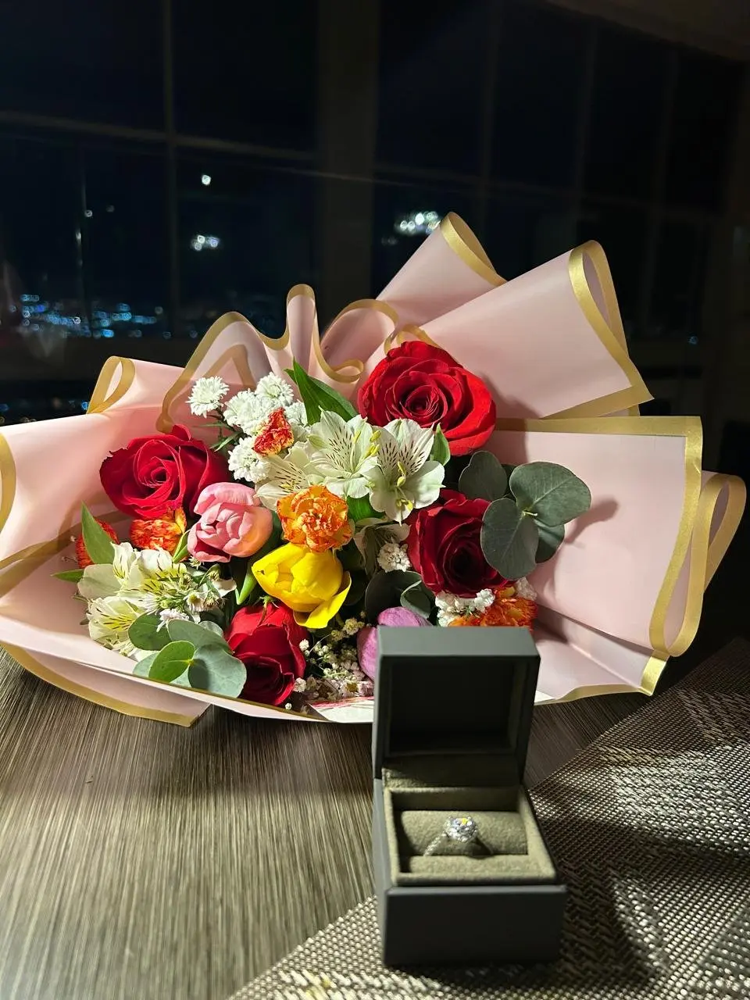
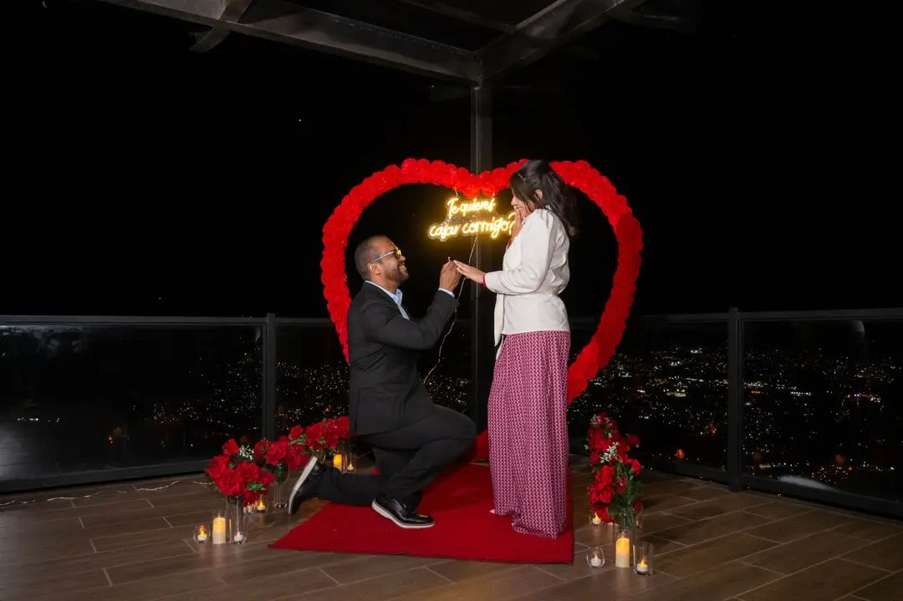
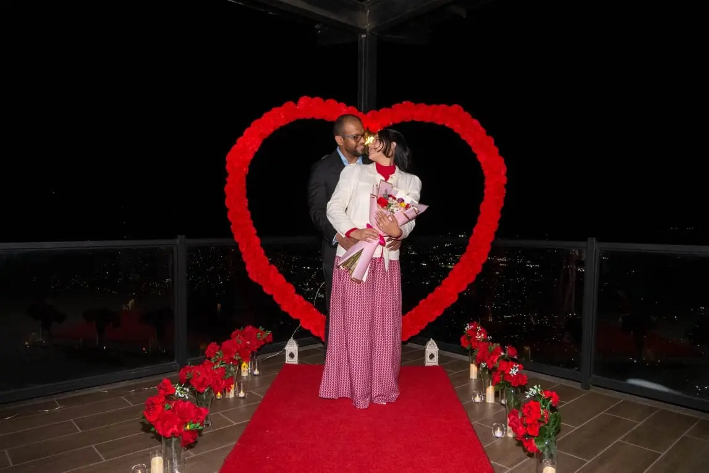

Ceremonia
Capilla del Bosque
Dirección ficticia · TegucigalpaTenemos el honor de invitarte a compartir nuestra celebración.

Nos casamos
Valeria & Nicolás
Con la bendición de nuestras familias
·
Dónde celebraremos
Capilla del Bosque
Dirección ficticia · TegucigalpaJardín del Alba
Dirección ficticia · TegucigalpaMomentos que atesoramos


Celebremos juntos
Detalles para ti
Formal elegante
Indicación ficticia de demostración.Será un honor contar contigo
La confirmación está deshabilitada en esta demostración ficticia. No se enviará información.